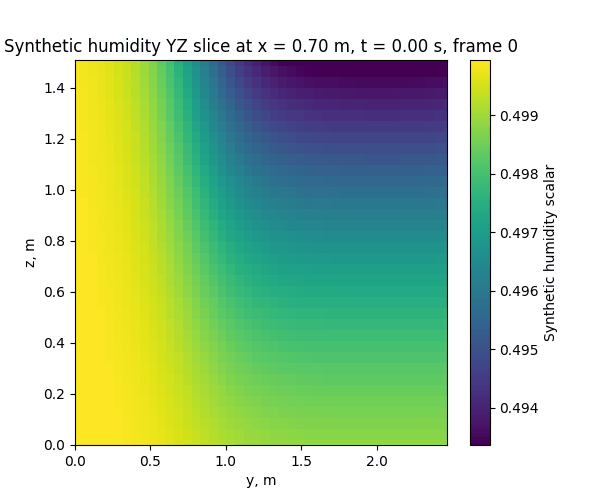
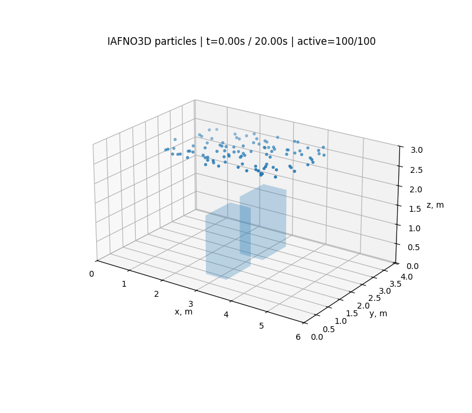

Eulerian foundations
2D velocity, absolute humidity, and temperature transport.
Python prototypeBRIAN HSIEH · CLEANROOM AIRFLOW RESEARCH
A numbered engineering record of airflow, temperature, humidity, CAD obstacles, OpenFOAM, and Lagrangian particle transport.
Project objective
OpenFOAM produces CFD fields, IAFNO learns future 3D states, and Lagrangian particles reveal how contamination may move through the predicted airflow. Earlier Python notebooks preserve the learning path that led to the OpenFOAM and AI workflow.
Evolution
2D velocity, absolute humidity, and temperature transport.
Python prototypeInertial Lagrangian particles, deposition, and revised cleanroom geometry.
Python prototype3D fields, moving body, PyVista, and CAD converted into a Cartesian solid mask.
Python prototypeCase generation, optional snappyHexMesh CAD, calculated-field reading, and particles.
OpenFOAMPlanned conventional-mesh versus Building-Cube Method study, deferred to prioritize the first AI predictor.
PlannedU/p export, 3D IAFNO increment learning, physics losses, 10× rollout, and particles.
IAFNOOpenFOAM U/p/T/passive-H followed by U/p/T IAFNO temperature animation.
IAFNO experimentDXF-derived cleanroom, FFU boundaries, U/p/T/H export, IAFNO, and particles.
Latest branchRecovered outputs
Animations are labeled by their computational source. Large GIFs are lazy-loaded to reduce initial page cost.





Model
[qᵐ … qᵐ⁺⁴] → Δqᵐ⁺⁵
The learned increment is added to the latest state and used autoregressively for longer rollouts.
Scientific scope